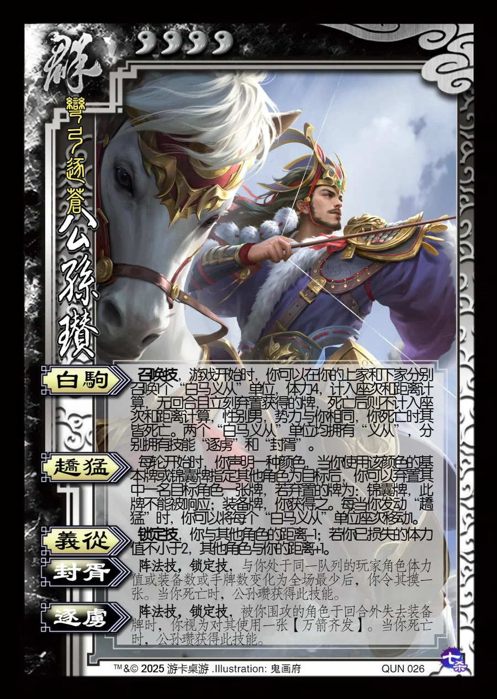

点击卡面查看大图
群
军公孙瓒
♥4弯弓逐苍
白驹召唤技
召唤技，游戏开始时，你可以在你的上家和下家分别召唤1个“白马义从”单位，体力4，计入座次和距离计算，无回合且立刻弃置获得的牌，死亡后则不计入座次和距离计算，性别男，势力与你相同，你死亡时其皆死亡。两个“白马义从”单位均拥有“义从”，分别拥有技能“逐虏”和“封胥”。
趫猛
每轮开始时，你声明一种颜色，当你使用该颜色的基本牌或锦囊牌指定其他角色为目标后，你可以弃置其中一名目标角色一张牌，若弃置的牌为：锦囊牌，此牌不能被响应；装备牌，你获得之。每当你发动“趫猛”时，你可以将每个“白马义从”单位座次移动1。
义从锁定技
锁定技，你与其他角色的距离-1；若你已损失的体力值不小于2，其他角色与你的距离+1。
封胥阵法技锁定技衍生
阵法技，锁定技，与你处于同一队列的玩家角色体力值或装备数或手牌数变化为全场最少后，你令其摸一张。当你死亡时，公孙瓒获得此技能。
逐虏阵法技锁定技衍生
阵法技，锁定技，被你围攻的角色于回合外失去装备牌时，你视为对其使用一张【万箭齐发】。当你死亡时，公孙瓒获得此技能。